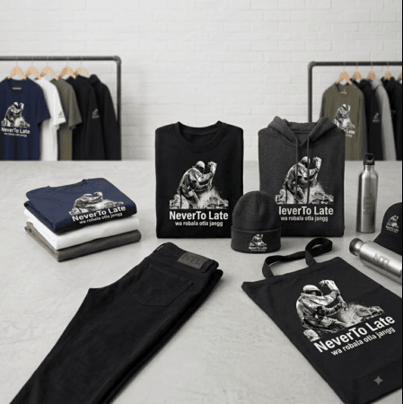
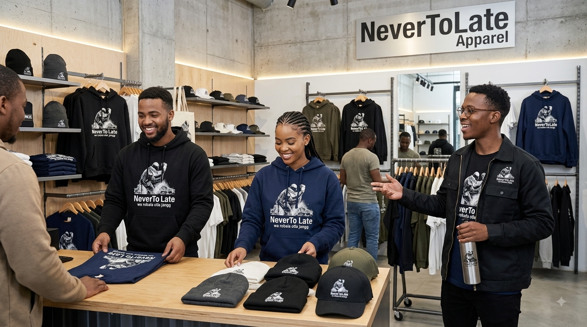

Welcome to NeverToLate Apparel, an authentic streetwear movement built for those who refuse to stand still, embrace the daily hustle, and define their own timing. Our collection is designed to bridge the gap between bold urban aesthetics and functional everyday comfort, delivering garments that make a lasting statement wherever you go. Every piece in our lineup—from our heavyweight signature hoodies and graphic tees to versatile utility gear—is crafted with careful attention to detail, premium materials, and modern tailored fits. We believe that style should move as fast as your ambition, providing you with quality gear that elevates your daily wardrobe rotation. Explore our latest drops, step into the culture, and wear your story with confidence—because wa robala otla jangg.
